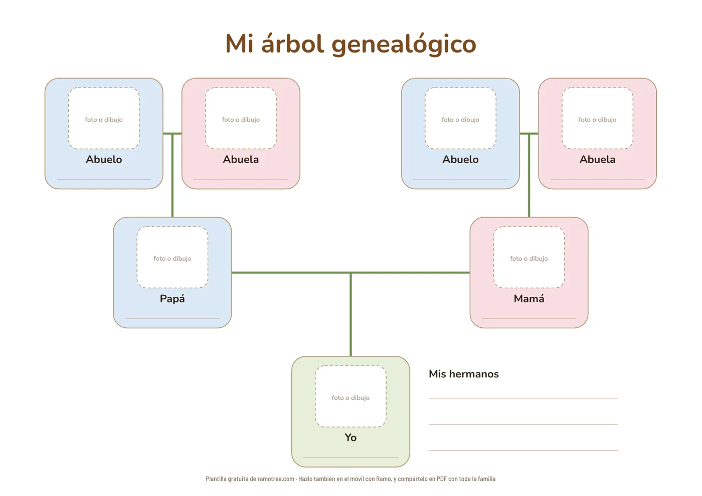

Árbol genealógico para niños: cómo hacerlo para el colegio
«Mañana hay que llevar el árbol genealógico.» Si te suena, aquí tienes una plantilla gratis para imprimir, ideas para que quede bonito y cómo hacerlo con tu hijo sin agobios.

Qué suelen pedir en el colegio
En infantil y primaria lo normal es un árbol de tres generaciones: el niño, sus padres y sus abuelos, con una foto o un dibujo de cada uno. En cursos mayores a veces se añaden los bisabuelos, los tíos y los primos, o se pide en inglés para practicar el vocabulario de la familia.
Paso a paso con tu hijo
- Que pregunte él. Una llamada o una visita a los abuelos para preguntar cómo se llaman, dónde nacieron y cómo eran de pequeños. Es la parte que más recuerdan.
- Fotos o dibujos. Imprime fotos pequeñas o deja que dibuje a cada uno en su recuadro.
- Rellena la plantilla. Los nombres, con buena letra; y si hay sitio, el año de nacimiento.
- Decóralo. Pégalo en una cartulina, dibuja un tronco y una copa, o haz las hojas con las huellas de sus manos.
Ideas para que quede bonito
- Un mural en cartulina con un árbol dibujado y las fotos en las hojas.
- Una rama por familia: la de papá y la de mamá, cada una de un color.
- Hacerlo en el móvil con Ramo y llevarlo impreso: sale con la foto de cada uno, en A4 o en A3, y se puede imprimir en grande para colgarlo en clase.
Cuando la familia no encaja en la plantilla
Padres separados, segundas parejas, adopciones, dos mamás o dos papás, abuelos que ya no están… La plantilla es solo un punto de partida: tacha, añade recuadros o dibuja ramas nuevas. Lo importante es que el niño reconozca a su familia. En Ramo cada persona puede tener varias parejas, y el árbol se coloca solo.
La familia en inglés
Por si el árbol hay que hacerlo en inglés («My family tree»):
| Español | Inglés |
|---|---|
| padre, madre (papá, mamá) | father, mother (dad, mum o mom) |
| padres | parents |
| hermano, hermana | brother, sister |
| abuelo, abuela | grandfather, grandmother (grandpa, grandma) |
| abuelos | grandparents |
| bisabuelo, bisabuela | great-grandfather, great-grandmother |
| tío, tía | uncle, aunt |
| primo, prima | cousin |
| hijo, hija | son, daughter |
| nieto, nieta | grandson, granddaughter |
| marido, mujer | husband, wife |
Para presentarlo: «This is my grandmother. Her name is Carmen.» Y si sale algún parentesco raro, la calculadora de parentesco lo explica.
Más guías